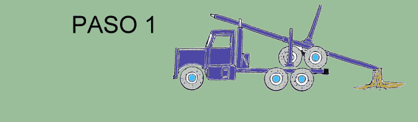
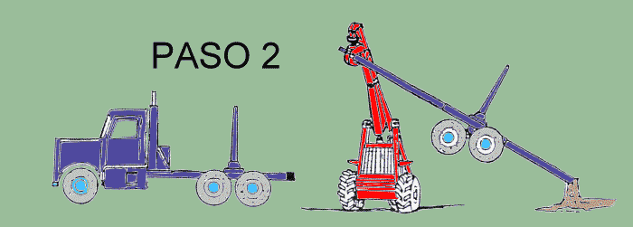
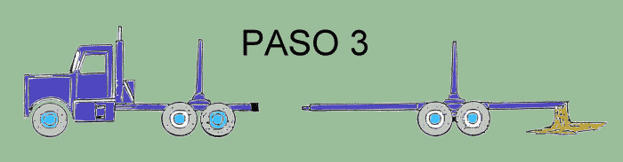
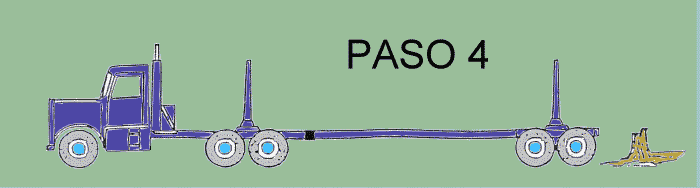

|
INFORME TÉCNICO TECFOR Nº 08 |
|
Carga y descarga del "Peerless" con Trineumático TECFOR
Problema:
¿Cómo cargar y descargar el "Peerless" con el trineumático TECFOR, en faenas con
torres de madereo?
Esta una de las principales críticas que se le hace a los trineumáticos en general, y por lo mismo
muchas veces las torres de madereo son usadas con cargadores frontales de apoyo para clasificación, ordenamiento
y carguío en las canchas de dichas faenas.
Solución:
Usando el concepto de palanca, el peso a levantar del boggie trasero del acoplado tipo "Peerless", se
reduce prácticamente a la mitad, y por lo tanto la fuerza requerida por el equipo a realizar dicha actividad,
se disminuye significativamente.
La solución se muestra en las siguientes ilustraciones.
El camión con acoplado llega a la cancha en su posición típica de transporte. La lanza del acoplado se destraba y se desplaza unos 2 metros hacia atrás, procediendo luego a trabarla con el pasador o perno en la posición que se muestra en el paso 1.

El extremo trasero de la lanza debe apoyarse firmemente sobre un
tocón o planicie de mayor altura que la cancha misma (puede ser un borde de la cancha).
Luego, el trineumático TECFOR toma con su garra el extremo anterior de la lanza del "Peerless"
y lo levanta hasta despejar el vehículo portante. Acto seguido el camión se mueve hacia delante (ver
paso 2)

y el TECFOR procede a bajar la lanza hasta apoyar el boggie sobre el piso (paso 3).

Ahora podemos destrabar nuevamente la lanza y desplazarla hasta engancharla en su vehículo portante (paso 4), dejando el "Peerless" en condiciones de ser cargado.

Para cargar el boggie trasero nuevamente en el punto de destino
de los trozos, se realiza el proceso inverso (pasos 4-3-2-1).
Beneficios:
1.- Se reduce la inversión requerida en equipos, por cuanto el TECFOR vale la mitad que un cargador frontal.
2.- Se reducen los costos de operación de la faena ya que el TECFOR es más eficiente y versátil que el cargador frontal.
3.- Se maximiza el rendimiento de la torre, ya que en algunas faenas es la torre de madereo quien descarga el boggie del "Peerless".
4.- Se maximiza el rendimiento de la torre pues cuando se usa junto
con el cargador frontal, este último no tiene facilidad para tomar los trozos que quedan al borde la cancha
que mira cuesta abajo.
Costos:
Sólo se requiere modificar la posición típica del boggie sobre el choco, trasladándola
cerca de 1 metro hacia atrás, e instalándole topes de seguridad para que no se desplace el boggie
en el transporte.
SOLUCIONES SIMPLES CON TECFOR